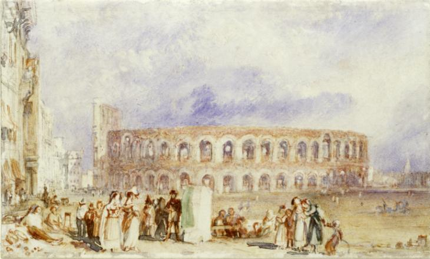

Krajobrazy Rilkego
Werona
Kiedy późnym wieczorem powróciliśmy do Werony, poeta gorąco zapragnął raz jeszcze zwiedzić Arenę, skąpaną w pozłocie pełni księżyca.
Doznaliśmy wszakże rozczarowania, bowiem potężna brama była już zamknięta, o czym nie omieszkała nam donieść poczciwa, gruba, starsza kobieta, która pod jedną z arkad amfiteatru przechowywała klucz. Na pociechę zaproponowała nam kupno widokówek i fotografii.
Joseph Mallord William Turner „Verona (A View of the Roman Theatre)”, ok. 1833
Dostrzegłszy smutek na twarzy Serafico, wdałam się z tym sympatycznym niewieścim cerberem w rozmowę, przywołując całą mą elokwencję tudzież najlepszy wenecki akcent (niewiele się on różni od dialektu z okolic Werony). Wyjaśniłam, iż poeta przybył z krainy barbarzyńców jedynie po to, by ujrzeć Arenę w poświacie księżyca, że przełożył Dantego i jest spokrewniony z „Can Grande”. (Wydaje mi się, że utrzymywałam nawet, iż wywodzi się od niego w linii prostej). Rilke, czując na sobie zachwycone spojrzenie życzliwej kobiety, najwyższym wysiłkiem woli starał się zachować powagę; dzięki Bogu słowo „poeta” ma jeszcze we Włoszech moc magiczną. Bramę otwarto, a my mieliśmy księżyc i Arenę tylko dla siebie, tak długo, jak tego pragnęliśmy. Wciąż widzę w myślach subtelną sylwetkę Serafico, stojącego wysoko na szczycie amfiteatru.
— Marie von Thurn und Taxis na kartach Wspomnienia o Rainerze Marii Rilkem